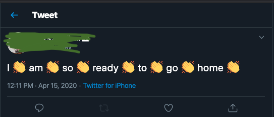
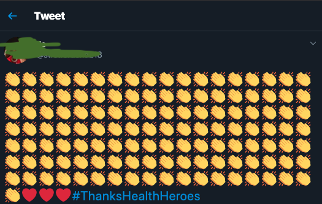

Add an Emoji to the End of Every Word
Emojis and Digital Accessibility
Emojis have become a fun way to communicate. One of the most entertaining uses, to me, has always been the clapping hands in between words:  Emojis are a great way to convey text and tone. The clapping-hands emoji in between each word has always been my favorite way to show exasperation.
The Problem
The problem is that emojis can make content difficult to parse when using assistive technology (AT) such as a screenreader. Most people who use screenreaders have reported some sort of disability (click here for an annual report on screenreader usage). Let's see how unedited emojis sound to a screenreader.
Emojis rendered properly
Frontend developers interested in accessiblity may have seen code examples that take advantage of the role and aria-label attributes available to an element, as well as the unicode for the emoji:
Many people pat themselves on the back at this point. The problem is that an accessible website might not be usable for people with disbilities. The word "image" will be appended to the end of your label. It would still be difficult to read an entire sentence.
No emojis
Like all important information, it's good to stick with the substance and remove emojis.
Moderation is key
People both with and without disabilities use emojis as a fun form of communication. It's important that we as developers take on the burden of ensuring that our content is readable and meaningful to the entirety of its audience. Maybe we can avoid all tweets like this in the future: 